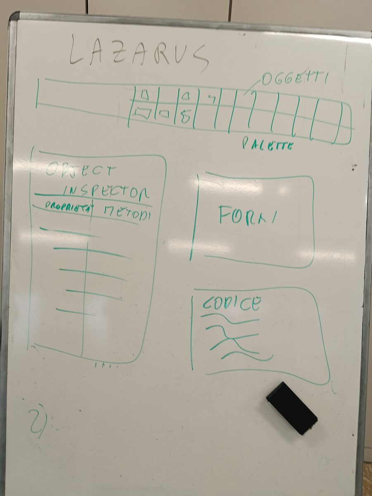
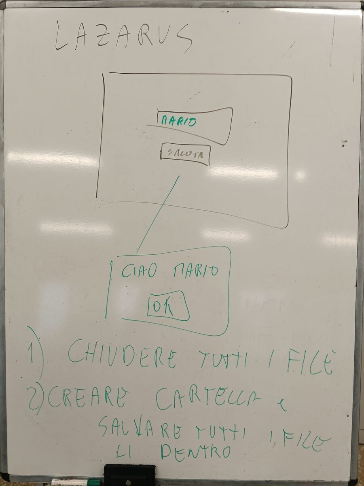
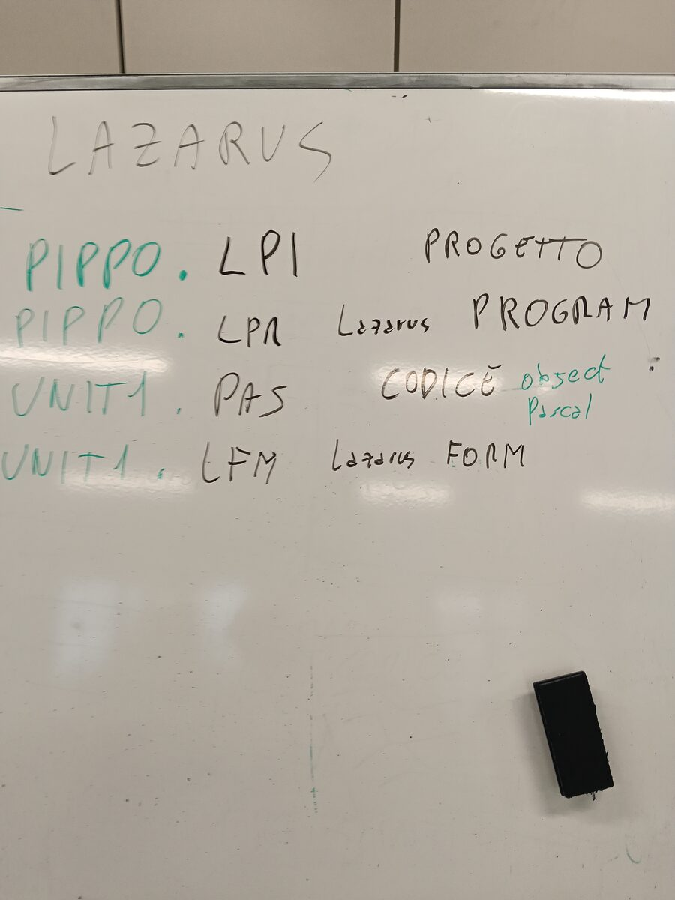

TEdit و TButton والنقرة وملفات المشروع
Versione 1.0 — 28/10/2026
| الموضوع الكبير | البرمجة |
| الموضوع | Lazarus: برنامجي الأول |
| المادة | المعلوماتية، المختبر |
| تاريخ الدرس | 28/10/2026 |
| المحتوى | أول نافذة فيها خانة (TEdit) وزر (TButton): تكتب الاسم، تضغط، فتظهر «Ciao» مع اسمك؛ ملفات المشروع؛ التسليم في Classroom |
هذا الملف يجمع الدرس كله: ما هو Lazarus، كيف نجهّز المشروع، البرنامج الأول «Ciao»، ملفات المشروع، والتسليم. اقرأه فصلًا بعد فصل، واعمل خطوة واحدة في كل مرة. أسماء القوائم والأزرار مكتوبة بالإيطالية كما تراها على الشاشة، وبجانبها معناها بالعربية.
Lazarus برنامج نستعمله لصنع برامج أخرى، بنوافذ وأزرار، مثل البرامج التي تستعملها كل يوم. يعمل مثل قطع التركيب (الليغو): تأخذ قطعة جاهزة (زرًّا، خانة)، تضعها في النافذة، ثم تكتب ماذا يجب أن تفعل. اسم اللغة Pascal.
اليوم نصنع البرنامج الأول لكل المبرمجين: برنامج «Ciao» (تعني «مرحبًا» بالإيطالية). تكتب اسمك في خانة، تضغط زرًّا، فيحيّيك البرنامج: Ciao Ahmed.
لفتح Lazarus: انقر نقرتين على أيقونة Lazarus (الأستاذ يريكم أين توجد). ثم انتقل إلى الفصل 02: هناك تجهّز المشروع الجديد ومجلدك.
قبل أن نضع القطع في النافذة نجهّز المكان الصحيح. مشروع واحد = مجلد واحد فقط: كل ملفات برنامجك تبقى معًا، في مجلدك. هكذا لا يضيع أي ملف، ولا يختلط أي ملف بملفات شخص آخر.
اعمل خطوة واحدة في كل مرة. بعد كل خطوة انظر إلى الشاشة.
Invio (مفتاح الإدخال Enter):ciao
ciao لتدخل إليه. في الأعلى أصبح مكتوبًا الآن ciao.ciao.lpi
unit1.pas
ciao. تمّ: لمشروعك مجلده الخاص!عندما تفتح مشروعًا جديدًا ترى عدّة نوافذ. لكل واحدة عملها:
| أين | اسمها | ماذا تفعل |
|---|---|---|
| في الأعلى | القائمة ولوحة المكوّنات (palette) | الأوامر («File» ملف، «Progetto» مشروع، «Esegui» تشغيل…) وتحتها القطع التي نضعها في النافذة، مقسّمة إلى ألسنة (تبويبات) |
| على اليسار | مفتش الكائنات («Ispettore oggetti») | خصائص القطعة المختارة (النص، الاسم، اللون) وأحداثها (ماذا يحدث عندما تنقر عليها) |
| في الوسط | Form1، وعليها نقاط صغيرة | نافذة برنامجك: هنا تضع القطع |
| خلف النافذة Form | محرّر الكود (unit1.pas) | هنا تكتب ماذا يفعل البرنامج |
| في الأسفل | الرسائل («Messaggi») | يقول لك Lazarus هل جرى كل شيء جيدًا أو أين يوجد خطأ |
للانتقال من النافذة Form إلى الكود والعودة: المفتاح F12.
انسخه في دفترك
+--------------------------------------------------+ | MENU: File Progetto Esegui ... | | PALETTE: [Standard] [OK] [abc] [A] ... | +------------+-------------------------------------+ | ISPETTORE | | | OGGETTI | FORM1 (la mia finestra) | | | +-----------------+ | | Proprieta | | Edit1 | <- TEdit | | Caption | +-----------------+ | | Text | [ Saluta ] <- TButton | | Eventi | | | OnClick | (F12 = vado al codice) | +------------+-------------------------------------+ | MESSAGGI: errori e avvisi | +--------------------------------------------------+
كلمات الرسم (بالإيطالية كما على الشاشة والسبورة): MENU = القائمة؛ PALETTE = لوحة المكوّنات؛ ISPETTORE OGGETTI = مفتش الكائنات؛ Proprieta = الخصائص؛ Eventi = الأحداث؛ FORM1 (la mia finestra) = نافذتي؛ F12 = vado al codice = أذهب إلى الكود؛ MESSAGGI: errori e avvisi = الرسائل: الأخطاء والتنبيهات.

لوحة المكوّنات هي صف الأيقونات في الأعلى، تحت القائمة. قطع اليوم موجودة في اللسان «Standard» (عادي). لكي تختار، اسأل نفسك: ماذا يجب أن يفعل من يستعمل البرنامج؟
| يجب أن… | القطعة (المكوّن) | الأيقونة في اللوحة | الخاصية المهمة |
|---|---|---|---|
| يكتب شيئًا | TEdit (خانة نص) | خانة بيضاء فيها «abc» أو «ab|» | Text = ما هو مكتوب داخلها |
| يضغط ليحدث شيء | TButton (زر) | زر مكتوب عليه «OK» | Caption = الكتابة على الزر |
| يقرأ نصًا (ينظر فقط) | TLabel (تسمية) | حرف «A» | Caption = النص الذي يظهر |
لوضع القطعة في النافذة: نقرة واحدة على الأيقونة في اللوحة، ثم نقرة واحدة على Form1، في المكان الذي تريده. يعطيها Lazarus اسمًا وحده: Edit1، Button1. الاسم (Name) هو ما ستستعمله في الكود.
خطوة واحدة في كل مرة. بعد كل خطوة انظر إلى الشاشة: يجب أن تكون مثل ما هو مكتوب.
Edit1.Text وامسح الكتابة «Edit1»: تبقى الخانة فارغة.Button1.Caption إلى Saluta (تعني «حيِّ» أو «سلِّم» بالإيطالية). تمّ: النافذة جاهزة!procedure TForm1.Button1Click(Sender: TObject); begin // qui scrivi la tua riga end;
begin وend; اكتب هذا السطر:ShowMessage('Ciao ' + Edit1.Text);ماذا يعني، قطعة قطعة:
| القطعة | معناها |
|---|---|
ShowMessage( … ) | يفتح نافذة صغيرة فيها رسالة والزر OK. ما بين القوسين هو الرسالة |
Edit1.Text | النص المكتوب داخل الخانة Edit1 (الاسم) |
'Ciao ' | كتابة ثابتة. توضع بين علامتي اقتباس مفردتين '. المسافة بعد Ciao تمنع أن يظهر «CiaoAhmed» ملتصقًا |
+ | يلصق كتابتين الواحدة بعد الأخرى |
; | نهاية التعليمة (مثل النقطة في آخر الجملة) |
كل شيء معًا: «افتح نافذة صغيرة مكتوب فيها Ciao والاسم الموجود في الخانة». كما على السبورة: تكتب MARIO، تضغط Saluta، فيظهر Ciao MARIO مع الزر OK. هذه هي الدالة التي تجيب على نقرة الزر: اسمها Button1Click.
انسخه في دفترك
scrivo MARIO -> clic su [Saluta] -> OnClick -> Button1Click
-> ShowMessage('Ciao ' + Edit1.Text) -> | Ciao MARIO [OK] |كلمات الرسم (بالإيطالية كما على الشاشة والسبورة): scrivo MARIO = أكتب MARIO؛ clic su [Saluta] = نقرة على الزر Saluta؛ OnClick = حدث النقرة؛ Button1Click = الدالة التي تعمل عند النقرة؛ في النهاية تظهر النافذة الصغيرة Ciao MARIO مع OK.

المجلد ciao صنعته في الفصل 02. الآن بقي القليل.
Ctrl + S: يحفظ Lazarus كل شيء في مجلدك.F9 (أو السهم الأخضر ▶ في الأعلى). يجهّز Lazarus البرنامج ويشغّله: تُفتح نافذتك أنت.;؛ كتبت = بدل :=؛ تنقص علامة الاقتباس '؛ السطر مكتوب خارج begin … end.بعد F9 افتح المجلد ciao بمستكشف الملفات (Esplora file). صنع Lazarus ملفات كثيرة. الامتداد هو الحروف بعد النقطة في اسم الملف: يقول ما نوع الملف. لا ترى الامتدادات؟ في مستكشف الملفات، في الأعلى: «Visualizza» (عرض) ثم «Mostra» (إظهار) ثم «Estensioni nomi file» (امتدادات أسماء الملفات).
المجموعة 1. المشروع
| الملف | ما هو | ماذا يوجد داخله | هل يمكن حذفه؟ |
|---|---|---|---|
ciao.lpi | معلومات المشروع (Lazarus Project Information) مثل: بطاقة المشروع، فيها قائمة القطع وتعليمات تركيبها | نص بصيغة XML (نص فيه علامات بين < و >): أي الملفات هي جزء من المشروع، وخيارات المشروع والمترجم، وهي التي نغيّرها من القائمة «Progetto» ثم «Opzioni progetto…» (خيارات المشروع). بالنقر مرتين على هذا الملف تعيد فتح المشروع | لا |
ciao.lpr | البرنامج الرئيسي (Lazarus PRogram) مثل: صفّارة بداية المباراة: تُطلق كل شيء | الأسطر القليلة بلغة Pascal التي تشغّل كل شيء وتفتح Form1. لا نلمسها | لا |
ciao.lps | الجلسة (Lazarus Project Session) مثل: علامة الكتاب: تتذكر أين توقفت | أي الملفات كانت مفتوحة في المحرّر، بأي ترتيب كانت الألسنة، أين كان المؤشر. لا تحتوي البرنامج: إذا حذفتها يبقى عملك كله موجودًا | نعم: Lazarus يصنعها من جديد |
ciao.res | الموارد (RESource) مثل: الحقيبة فيها الأشياء التي نضعها داخل ملف exe: الأيقونة والإصدار | أيقونة البرنامج وإصداره، جاهزان لوضعهما داخل ملف exe | نعم: Lazarus يصنعها من جديد |
ciao.ico | الأيقونة (ICOn) مثل: صورة الملف الشخصي للبرنامج | الرسم الصغير للبرنامج، الذي تراه على شريط Windows | نعم: Lazarus يصنعها من جديد |
المجموعة 2. النافذة والكود
| الملف | ما هو | ماذا يوجد داخله | هل يمكن حذفه؟ |
|---|---|---|---|
unit1.lfm | النافذة form (Lazarus ForM) مثل: مخطّط غرفة: أين توجد قطع الأثاث | شكل النافذة: أي القطع فيها، أين توجد، ما حجمها، Caption و Text | لا |
unit1.pas | الوحدة unit (ملف كود بلغة Pascal) مثل: الوصفة: التعليمات التي كتبتها أنت | كودك أنت: الإجراء Button1Click مع سطر Ciao. يمكن أن يكون امتداد الوحدة أيضًا .pp | لا |
المجموعة 3. البرنامج الجاهز
| الملف | ما هو | ماذا يوجد داخله | هل يمكن حذفه؟ |
|---|---|---|---|
ciao.exe | ملف تنفيذي (EXEcutable)، في مجلد المشروع مثل: الكعكة المخبوزة: تؤكل حتى بدون الوصفة | البرنامج الجاهز، صُنع بالمفتاح F9. يُفتح حتى بدون Lazarus | نعم: يُصنع من جديد بالمفتاح F9 |
المجموعة 4. ملفات عمل المترجم (المترجم، بالإيطالية compilatore، هو البرنامج الذي يحوّل لغة Pascal إلى برنامج يعرف الحاسوب كيف ينفّذه)
| الملف | ما هو | ماذا يوجد داخله | هل يمكن حذفه؟ |
|---|---|---|---|
lib\x86_64-win64\ | مجلد مثل: طاولة المطبخ حيث نجهّز القطع | القطع الوسيطة اللازمة لصنع ملف exe (في الأسطر التالية) | نعم: Lazarus يصنعه من جديد |
.o | ملف كائن (Object) مثل: مكوّن واحد مطبوخ | كود الآلة لوحدة واحدة فقط، مثلًا unit1.o | نعم |
.ppu | وحدة مترجمة من Free Pascal (Pascal Precompiled Unit) مثل: قطعة مركّبة، عليها بطاقة تقول ماذا تعرف أن تفعل | معلومات عن الوحدة المترجمة، مثلًا unit1.ppu | نعم |
.compiled | تذكير بالترجمة مثل: الإيصال: يتذكر كيف جرت المرة الأخيرة | كيف تُرجم المشروع في المرة الأخيرة: هكذا يعرف Lazarus هل يجب أن يعيد كل شيء | نعم |
.or | موارد مترجمة مثل: حقيبة ملف .res مغلقة، جاهزة للتحميل | الملف .res جاهزًا للصقه بملف exe | نعم |
backup\ | مجلد النسخ الاحتياطية مثل: نسخة مصوّرة من الواجب قبل تصحيحه | عندما تحفظ ملفًا كان موجودًا من قبل، يضع Lazarus هنا النسخة السابقة. نسخ ملفات المشروع لها نفس اسم الملف الأصلي (unit1.pas، unit1.lfm، ciao.lpi…)؛ والملف الذي ليس جزءًا من المشروع يأخذ زيادة .bak (مثلًا prova.pas.bak). يظهر المجلد من الحفظ الثاني | نعم |
مع الإعدادات العادية لبرنامج Lazarus 4، خارج المجلد backup لا تجد نسخًا تنتهي بـ ~ أو .bak. إذا رأيتها، فقد غيّر أحدهم إعدادات النسخ (القائمة «Strumenti» (أدوات) ثم «Opzioni…» (خيارات)، الصفحة «Backup» (النسخ الاحتياطي)).
قاعدة نتذكرها: الملفات الأربعة التي نحتفظ بها، ونسلّمها ونضعها على GitHub، هي .lpi .lpr .pas .lfm. كل الباقي يصنعه Lazarus وحده.
انسخه في دفترك
ciao\ <- UNA cartella = UN progetto |- ciao.lpi progetto (+ opzioni) TENERE |- ciao.lpr programma principale TENERE |- unit1.pas il mio codice TENERE |- unit1.lfm com'e' fatta la finestra TENERE |- ciao.lps sessione si rifa' |- ciao.res risorse (icona) si rifa' |- ciao.ico icona si rifa' |- ciao.exe programma finito (F9) si rifa' |- lib\x86_64-win64\ | .o .ppu .compiled .or (compilatore) si rifa' |- backup\ copie di sicurezza si butta
كلمات الرسم (بالإيطالية كما على الشاشة والسبورة): UNA cartella = UN progetto = مجلد واحد = مشروع واحد؛ TENERE = نحتفظ به؛ si rifa' = يُصنع من جديد؛ si butta = يمكن رميه؛ progetto (+ opzioni) = المشروع (والخيارات)؛ programma principale = البرنامج الرئيسي؛ il mio codice = كودي؛ com'e' fatta la finestra = شكل النافذة؛ sessione = الجلسة؛ risorse (icona) = الموارد (الأيقونة)؛ icona = الأيقونة؛ programma finito = البرنامج الجاهز؛ compilatore = المترجم؛ copie di sicurezza = النسخ الاحتياطية.

البرنامج يعمل؟ الآن اجعله خاصًا بك. اختر شيئًا واحدًا على الأقل:
'Ciao ' اكتب 'Hello '، 'مرحبا '، '你好 '، 'Hola '…Caption (مثلًا «Il saluto di Ahmed»، أي «تحية أحمد»).Color، اختر لونًا من القائمة المنسدلة.Label1.Caption := 'Ciao ' + Edit1.Text;: تبقى التحية مكتوبة داخل النافذة أيضًا.ثم اشرحه في 30 ثانية لزميلك: «وضعت TEdit و TButton؛ عندما أنقر، الدالة Button1Click تفتح نافذة صغيرة فيها Ciao والاسم».
في Classroom يوجد الواجب «Il mio primo programma: Ciao in Lazarus» (برنامجي الأول: Ciao في Lazarus). داخله مستند Google جاهز، خاص بك وحدك. افتحه واعمل 3 أشياء:
procedure TForm1.Button1Click حتى end;، واضغط Ctrl + C؛ في المستند انقر تحت «1. Il mio codice» (1. كودي) واضغط Ctrl + V.F9)، اكتب اسمك واضغط Saluta. ثم اضغط Win + Shift + S واسحب مستطيلًا حول نافذتك. في المستند انقر تحت «2. Il mio programma che funziona» (2. برنامجي الذي يعمل) واضغط Ctrl + V.ShowMessage('Ciao ' + Edit1.Text);. يمكنك أن تكتب بلغتك أيضًا.ثم في Classroom اضغط «Consegna» (تسليم): الزر الأزرق في أعلى اليمين داخل الواجب.